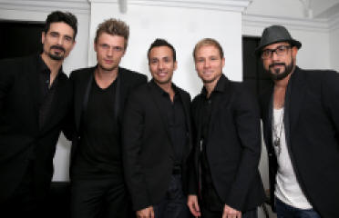

Backstreet Boys Group Image
Backstreet Boys Information
The Backstreet Boys (sometimes referred to as BSB) are an American vocal group, formed in Orlando, Florida in 1993. The group consists of A. J. McLean, Howie Dorough, Nick Carter, Kevin Richardson, Brian Littrell.
The group rose to fame with their debut international album,Backstreet Boys (1996). In the following year they released their second international album Backstreet's Back (1997), and their U.S. debut album which continued the group's success worldwide. They rose to superstardom with their third studio album Millennium (1999) and its follow-up album,Black & Blue(2000).
After a two-year hiatus, they regrouped and released a comeback album Never Gone (2005). Richardson left the group, after the conclusion of the Never Gone Tour, in 2006 to pursue other interests. The group then released two albums as a quartet:Unbreakable (2007) and This Is Us (2009).
In 2012, the group announced that Richardson had rejoined them permanently. In the following year they celebrated their 20th anniversary and released their first independent album, In a World Like This (2013). The group also released their first documentary movie, titled Backstreet Boys: Show 'Em What You're Made Of in January 2015.
The Backstreet Boys have sold over 130 million records worldwide, making them the best-selling boy band in history, and one of the world's best-selling music artists. They are the first group since Sade to have their first nine albums reach the top 10 on the Billboard 200, and the only boy band to do so. They also received a star on the Hollywood Walk of Fame on April 22, 2013.
Backstreet Boys Discography
| Album | Year | Description |
| Backstreet Boys | 1996 | Self-titled international debut studio album. This album was released around Europe, Asia, Canada and other markets. |
| Backstreet's Back | 1997 | It was released internationally on August 11, 1997, with the exception of United States. |
| Millennium | 1999 | It was a highly anticipated follow-up to both their albums. It was their first album to be released in both the U.S. and internationally in the same form, at the same time. |
| Black & Blue | 2000 | Black & Blue is the fourth album of the American vocal-pop group Backstreet Boys. The album recorded the best international sales in a week for an album in history by selling over 5 million copies in its first week of sales globally. |
| Never Gone | 2005 | Never Gone was originally due for release in 2004, but the release date for the album was pushed to June 14, 2005 for unknown reasons. |
| Unbreakable | 2007 | It was released on October 24, 2007 in Japan and October 30 in the United States. This is the first Backstreet Boys album after Kevin Richardson's departure in 2006 to pursue other interests. |
| This Is Us | 2009 | It is their second and last album as a quartet. It was released on September 30, 2009 in Japan through Sony Music Japan. |
| In a World Like This | 2013 | it is the first album featuring all five original members since Kevin Richardson left the group in 2006 to focus on his family and pursue other interests. Richardson rejoined the group in 2012. |